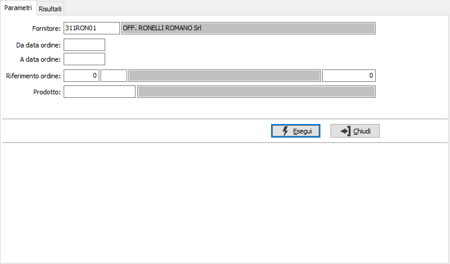
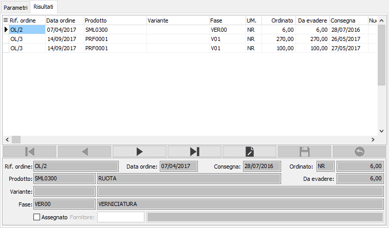

Riassegnazione fornitore
La funzione di riassegnazione ordine terzista consente di gestire le situazioni in cui un ordine terzista (già parzialmente rientrato) non può essere completato dal fornitore stesso e quindi per la parte residua deve essere riassegnato ad altri. Se l’ordine viene riassegnato ad un singolo fornitore può essere indicato direttamente il fornitore nella funzione di riassegnazione, se invece il residuo dell’ordine deve essere spezzato fra più fornitori non si assegna il fornitore in quanto dopo il salvataggio viene richiamata automaticamente la funzione di Pianificazione lavorazione all’interno della quale è possibile frazionare la richiesta di lavorazione su più terzisti. E' necessario inserire il fornitore di cui analizzare gli ordini in corso, è poi possibile specificare un range di date, un singolo riferimento oppure un codice prodotto per eseguire la ricerca degli ordini.
Se presente la produzione ed abilitato il flag "Aggiorna componenti da ordini terzisti" non sarà possibile eseguire la procedura.

Confermando tramite la pressione del bottone Esegui, viene avviata la selezione e richiamata la finestra video Risultati, dove vengono mostrati gli ordini in corso, parzialmente rientrati, relativi ai criteri di selezione inseriti. Da questa sezione è possibile assegnare direttamente un fornitore oppure selezionare solo la casella Assegnazione senza specificare il fornitore. Al salvataggio sarà richiamata automaticamente la funzione di Pianificazione lavorazione all’interno della quale è possibile frazionare la richiesta di lavorazione su più terzisti. Per la sola selezione di assegnazione e di disassegnazione è presenti un menù collegato al tasto destro del mouse se si clicca sulla griglia da dove è possibile intervenire sul singolo rigo o su tutti i dati presenti.
